DrivewaysBlock paving and detailed borders
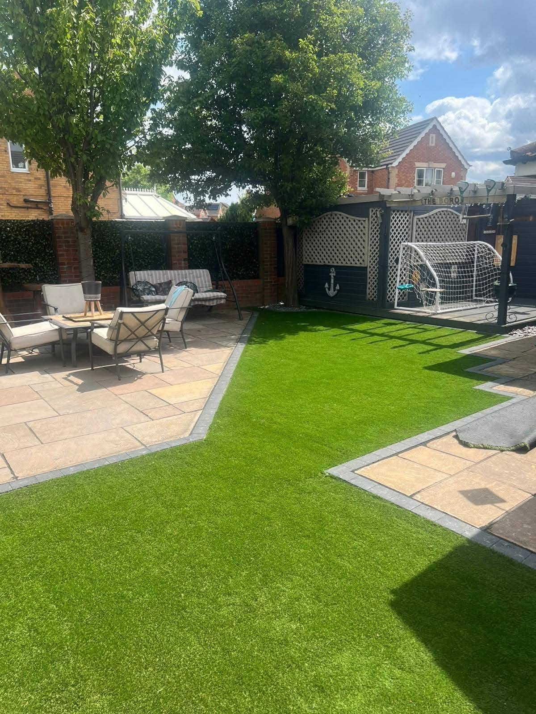
FAMILY-RUN · BILLINGHAM
Love where you live.
Gardens, patios and driveways designed for real life and finished with care.
LandscapingDrivewaysPatios & paving
PatiosNatural stone and modern paving
GardensLawns, layouts and outdoor living
Paths & detailsCurves, steps and finishes
DESIGN · BUILD · MAINTAIN
Make the outside feel like home.
C.S Landscapes & Driveways is a family-run business. These supplied projects show how paving, planting space, lawns and thoughtful edges come together to make a garden or entrance more useful and welcoming.
Explore the projects →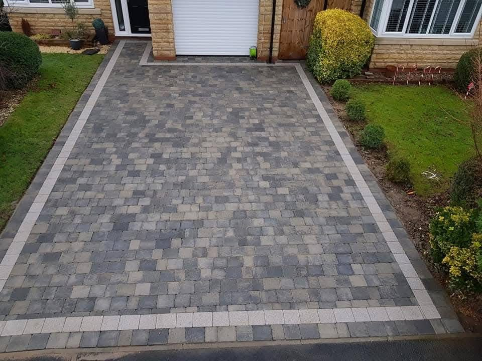
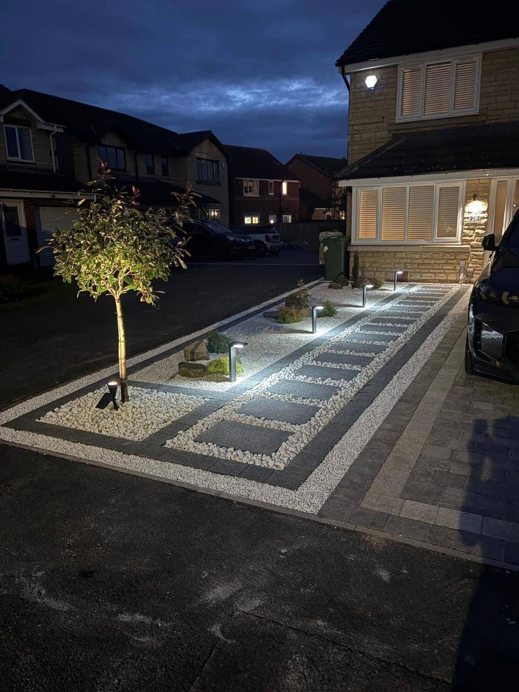
DRIVEWAYS THAT FIT THE HOME
A better welcome starts outside.
From a crisp charcoal block layout to a softer mixed-tone entrance, the paving pattern and edge detail give each property its own finish.
Discuss a driveway →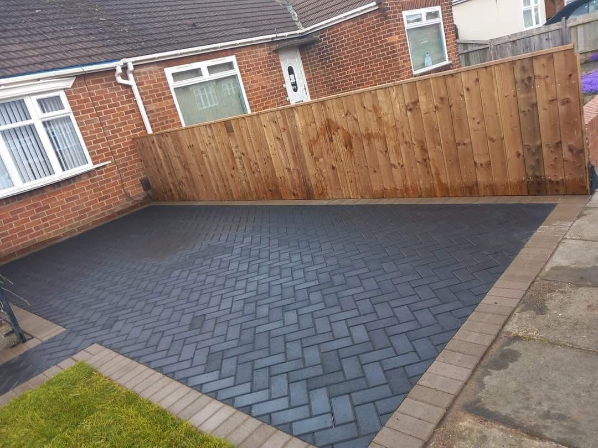
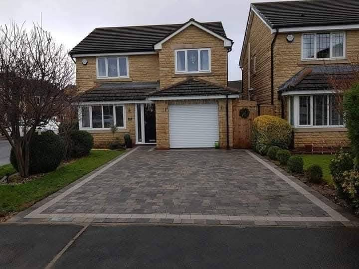
REAL C.S WORK
Every space has its own shape.
Supplied photographs of individual driveways, garden layouts and patio finishes.
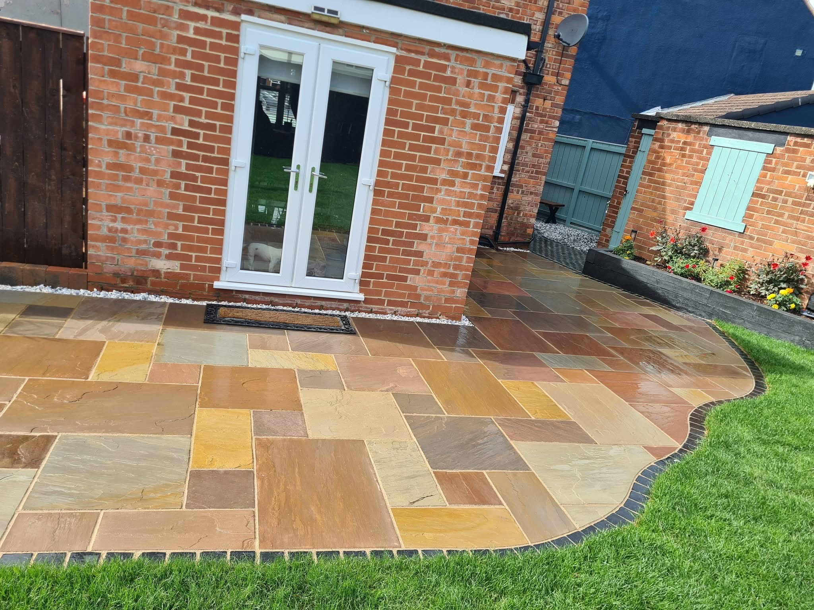
01 / STONE PATIO
Natural colour, clean curves.
Varied stone tones sit against a dark curved border, lawn and planted edge.
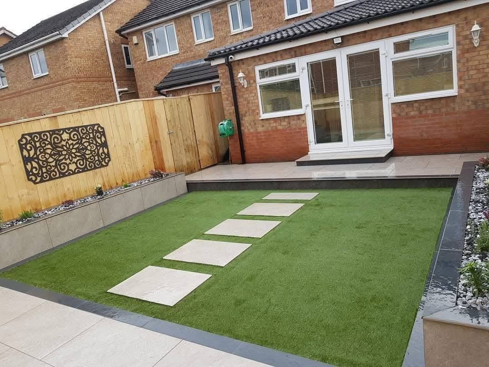
02 / GARDEN LAYOUT
A clear route through the garden.
Stepping stones divide the lawn and lead from the patio to the seating area.
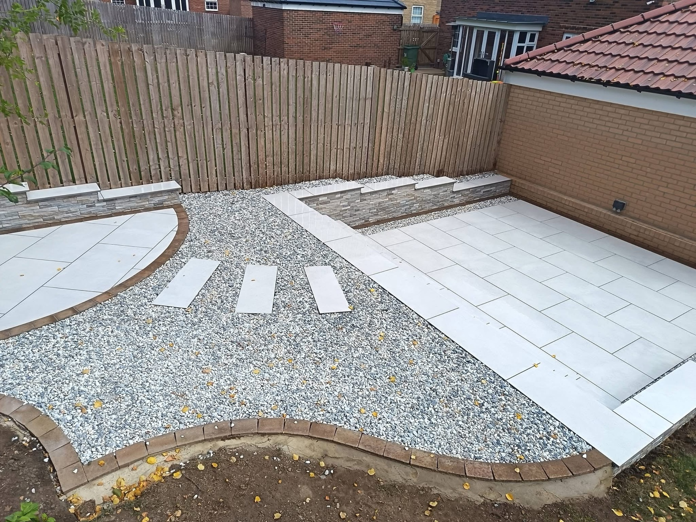
03 / MODERN PATIO
Space to sit, paths to explore.
Paving and gravel define zones in a compact outdoor area.
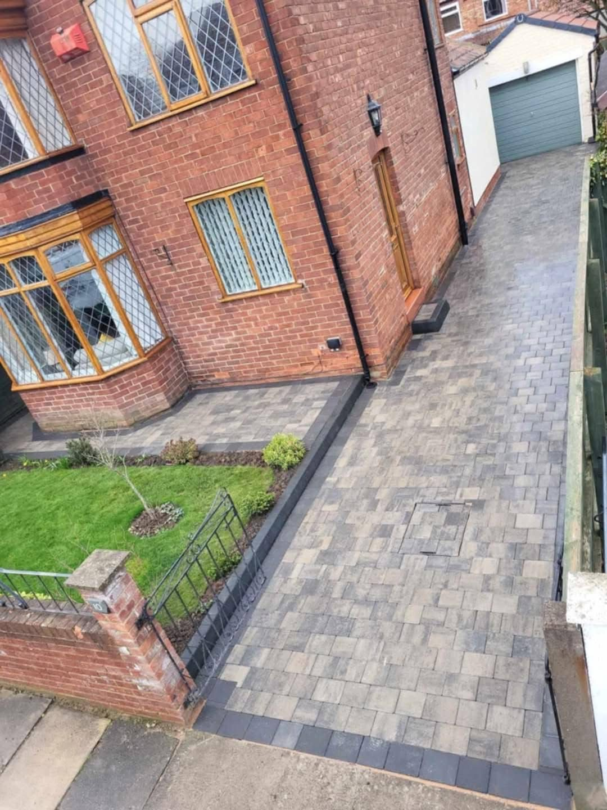
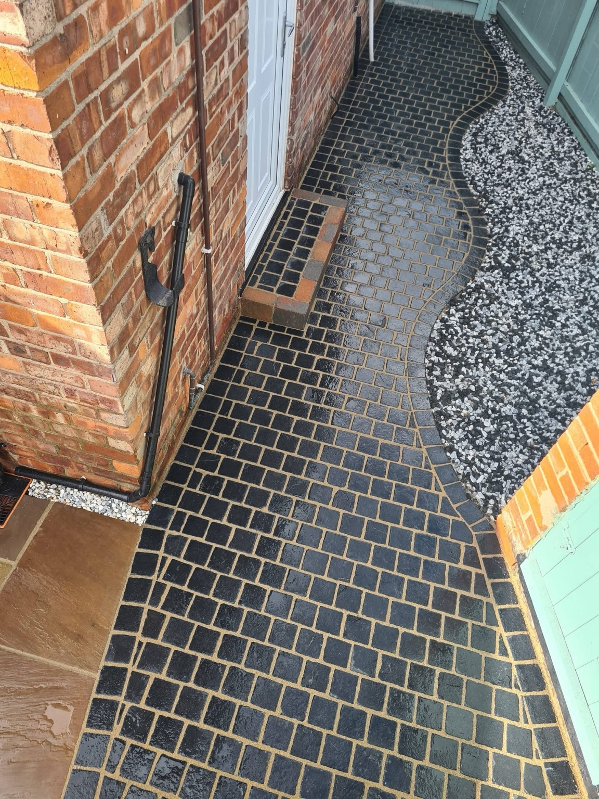
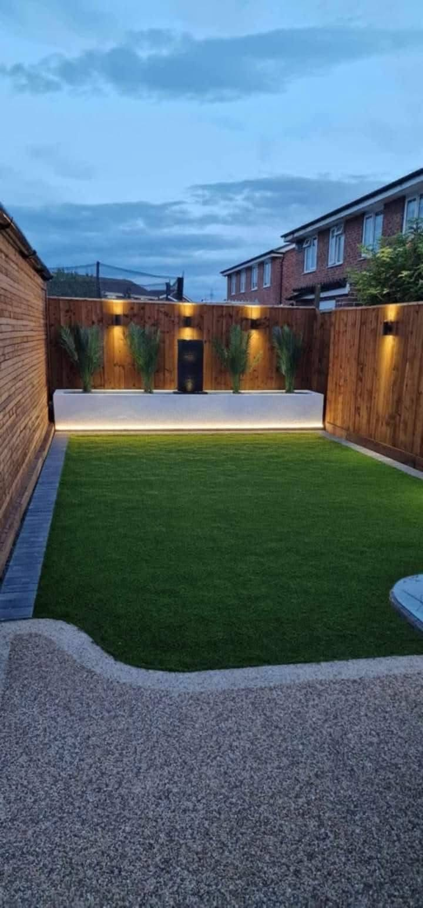
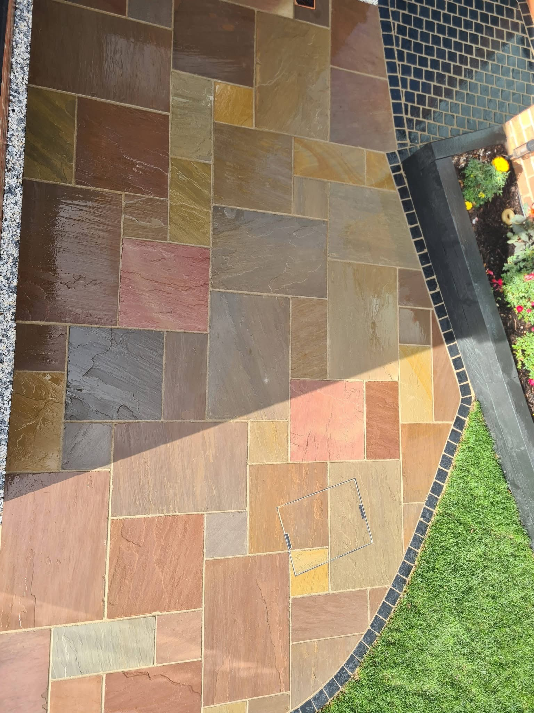
C.S LANDSCAPES & DRIVEWAYS
Built around the way you use the space.
Based in Billingham, the family-run team offers landscaping and driveway work. Their project photographs show block paving, natural stone patios, artificial lawn, fencing and considered garden layouts.
01
Start with the layout
Plan the areas you want to use.
02
Choose the finish
Paving, lawn and borders that suit the home.
03
Enjoy the result
An outdoor space made for daily life.
REQUEST A QUOTE
Tell C.S about your project.
Complete the details and WhatsApp opens with your request ready to send. This is a quote request, not a confirmed booking.
Prefer to talk? 07444 461588.
BILLINGHAM & SURROUNDING AREAS
Ready to love where you live?
Call or message about your garden, patio or driveway.